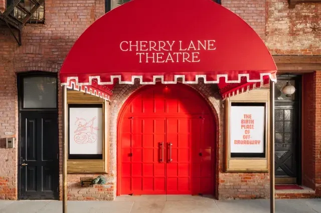
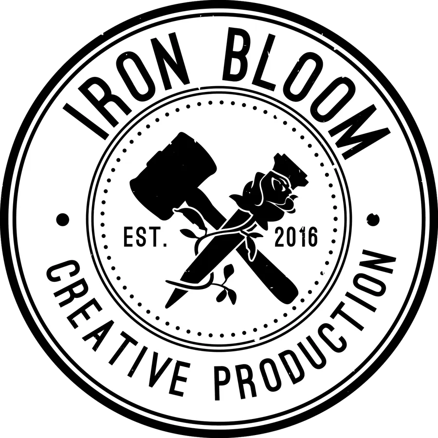
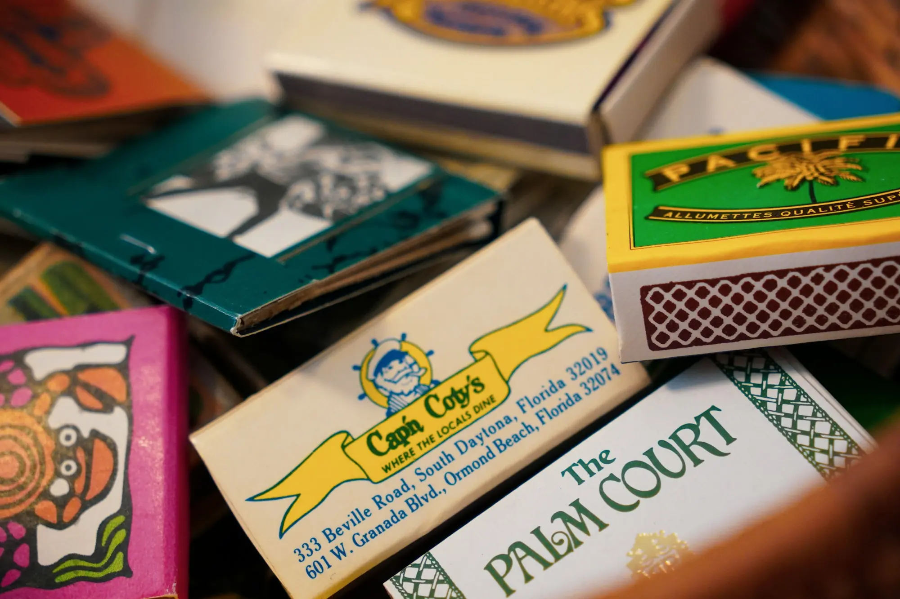

Sydney Prince, Production Manager. Stage Manager. Collaborator.
Production Manager. Stage Manager. Collaborator.
Welcome to my website - I am glad you are here!
Sydney Prince is a Production and Stage Manager specializing in theatre and live events. A born-and-raised New Yorker, she has been part of the theatre community for as long as she can remember and thrives on collaboration and bringing creative visions to life. Take a look around the site to learn more about her work, and don’t hesitate to reach out about projects, ideas, or dreams in the making.
What’s Happening These Days?
-

In-House Production Manager
Cherry Lane Theatre (opens in a new tab)
Through my work at Iron Bloom, I serve as the in-house production manager at Cherry Lane Theater, which is owned and operated by A24. I manage our theatrical tentpoles, screenings, concerts, and ancillary programming, bringing creativity, scale, and precision to every project.
-

Production Manager
Iron Bloom Creative Production (opens in a new tab)
At Iron Bloom, I oversee production for a wide range of projects, creating immersive spaces and holistic experiences for live events, performances, festivals, and experiential installations. The company continues to expand its offerings to a wide range of programming across different formats.
-
Production and Outfitting Coordinator
NBA All Star (opens in a new tab)
For the NBA All-Star Game, I serve as the primary point of contact for outfitting distribution and decal installation at the main venue, overseeing the setup and execution of visual elements across All-Star Weekend. I handle communication with vendors on the ground, ensuring all branding, signage, and event materials are delivered and installed seamlessly, supporting a large-scale, high-profile production with precision and efficiency.
